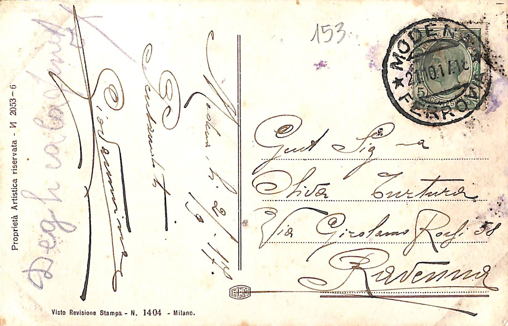

Cartoline artistiche della Spezia
Informazioni sul corpus
Questo progetto realizza l'edizione digitale di due cartoline artistiche della I guerra
mondiale.
- Editore: Unipi
- Luogo di pubblicazione: Pisa
- Anno di pubblicazione: 2021
- Disponibilità: Available under licence only
- Distribuzione: LabCD
(Laboratorio di Cultura Digitale - Università di Pisa)
- Ente di appartenenza: Comune della Spezia
- Luogo di conservazione: Museo Civico Etnografico "Giovanni Podenzana", Sezione dei cimeli garibaldini e della
Prima Guerrra Mondiale,
La Spezia (SP),
Italia.
Persone citate:-
Giovanni
-
Oliva
Turtura
-
Galileo
Chini
[pittore]
Luoghi citati:- Ravenna
- Modena
- Milano
[Donna con lettera e amorino] - Edizione digitale
Questa cartolina è stata scritta il giorno
1917/09/02
da Giovanni,
presso Modena
e inviata a
Oliva
Turtura
, a
Ravenna
.
Note- Sotto la firma, vi è una scritta sbiadita illeggibile che non sembra appartenere al
testo della cartolina.
- Sul retro troviamo stampate "Proprietà artistica riservata N 2053-6", e "Visto revisiona
stampa - N 1404 - Milano".
Fronte
Titolo: [Donna con lettera e amorino]
Descrizione: Una donna piange coprendosi il viso con le mani. Sul tavolo alla sua destra, un amorino
è in piedi sopra una lettera.
Retro

Modena
[illegibile]
2/9/17
Pensandoti
Giovannino
153
MODENA FERROVIA
[non chiaro per sbiadimento] 21.10.17.18
francobollo da 5 centesimi del Regno d'Italia
Gent [interpretazione: Gentile]
Sig ra [interpretazione: Signora]
Oliva Turtura
Via Girolamo Rossi 58
Ravenna
Volo d'Icaro - Edizione digitale
Questa cartolina è stata scritta il giorno
1917/09/05
da un anonimo presso Ravenna.
Note- La cartolina è anonima e non è stata inviata. L'unico testo presente è rappresentato
dal luogo e la data di stesura.
- Sul retro troviamo nome dell'artista (Galileo Chini) e titolo dell' opera, e "Proprietà
artistica riservata -Serie XIII - N 76".
Fronte
Titolo: Volo d'Icaro di Galileo Chini
Descrizione: Icaro alato è in caduta libera verso il mare, che riflette le tinte di un cielo arancione
e violaceo.
Retro
[non chiaro per sbiadimento]
Ravenna
5 Settembre 1917